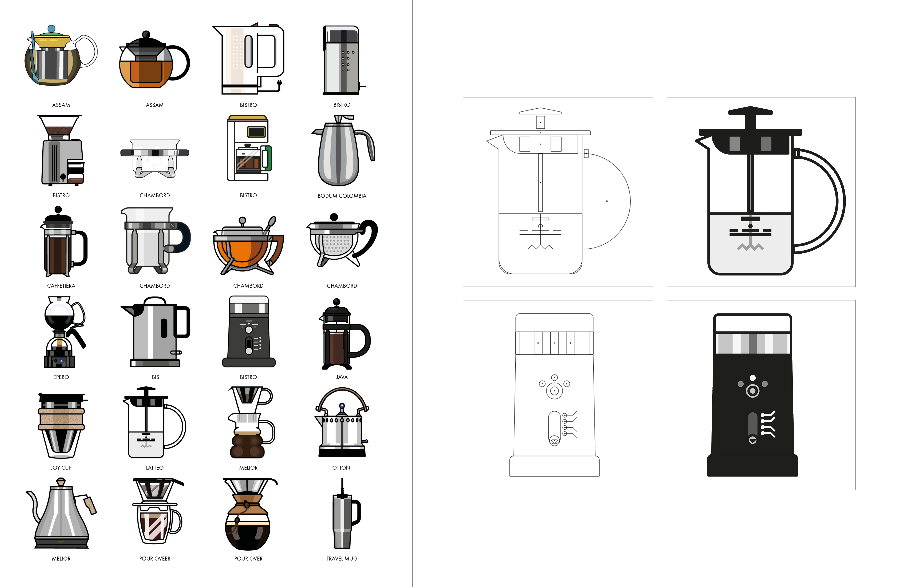
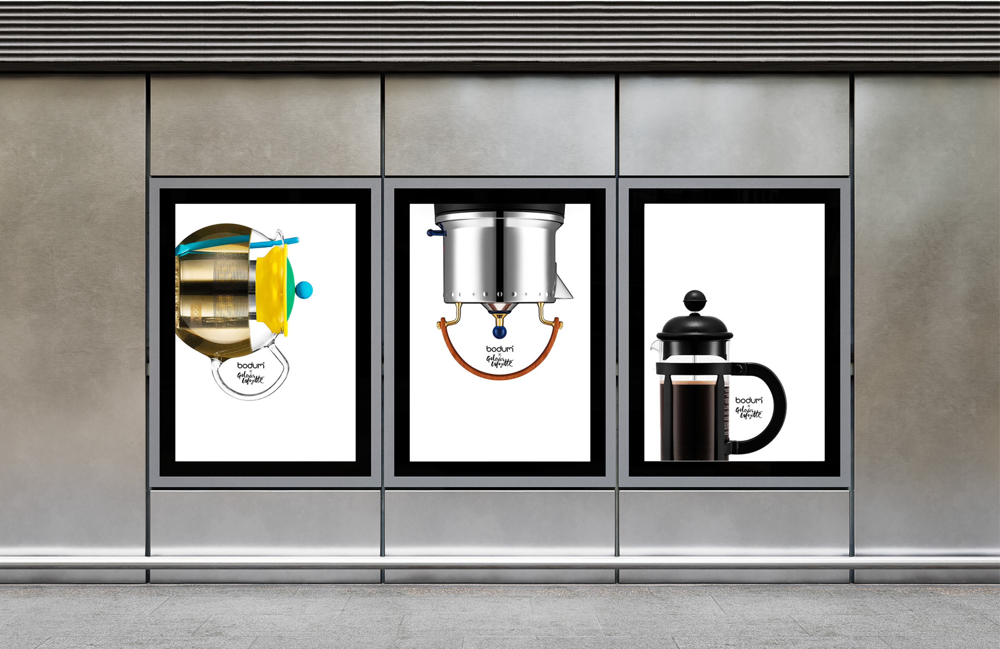

Bodum
Affiche
Technique : Dessin vectoriel
Format : 29,7 × 42 cm
Création collective de pictogrammes d’objets Bodum sur Illustrator, puis conception d’un poster A3 recto verso mêlant sélection de produits et composition graphique autour de la collaboration Bodum × Galeries Lafayette.

